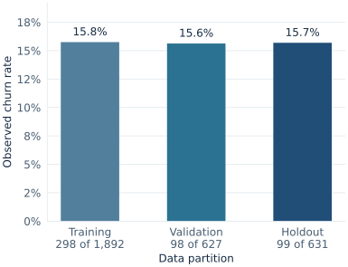
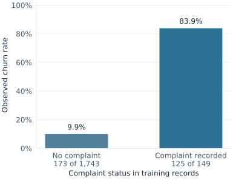
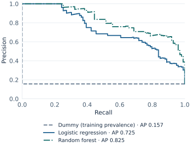
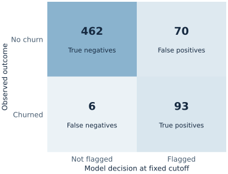
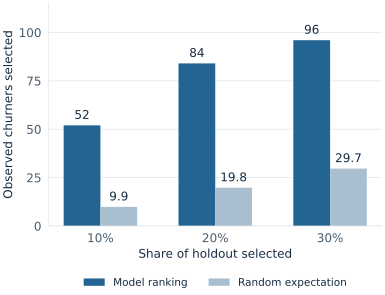

01. The business question
A retention team with a fixed outreach budget needs to choose which eligible subscribers to review first. The score ranks the risk of churn by the end of month 12 using signals aggregated during months 1–9. Months 10–12 are the planning window.
I use average precision to compare rankings when churn is uncommon. At a given outreach capacity, precision tells the team what share of flagged records actually churned, and recall tells it what share of all observed churners the list captured.
02. Data and grouped split
The public CSV contains 3,150 customer records from one Iranian telecom provider. Of those records, 495 are labeled as churn, a rate of 15.71%. The released file contains 14 columns, zero blank cells, and 300 rows that repeat an earlier complete record.
The file contains neither a usable customer ID nor per-record calendar dates. I kept the repeated records because identical values may describe different customers. I grouped rows by their exact nine-feature signature before splitting so no identical input profile crosses partitions. This also keeps exact duplicate records together.
Five stratified group folds approximate a 60% training, 20% validation, and 20% holdout split. Folds 2–4 train the models, fold 1 selects the model and cutoff, and fold 0 measures performance. These partitions test unseen input profiles within the released sample.

Iranian Churn (2020), UCI Machine Learning Repository. Accessed November 18, 2026. UCI Iranian Churn · DOI 10.24432/C5JW3Z · CC BY 4.0
03. Modeling workflow
- Validate fields
- Audit availability
- Group and split
- Train and compare
- Evaluate outreach
Feature availability
The nine retained inputs cover call failures, whether a complaint was recorded, subscription length, charge band, call duration in aggregate, call and SMS frequency, distinct called numbers, and tariff plan. I excluded Status because inactive status is too close to the churn outcome, Customer Value because its construction is undocumented, and both age fields. I derived average voice-call seconds for records with calls and a zero-call indicator. The training pipeline imputes undefined averages for records with no voice calls.
UCI describes the complaint field as part of the nine-month feature window. The release provides no event dates to establish whether complaints included requests to cancel. That uncertainty matters before using the field to inform outreach.

Model comparison and thresholds
I compare a dummy baseline, logistic regression, and a tree ensemble. Preprocessing fits only on the training partition. Validation average precision selects the model. The score cutoff targets a 20% validation outreach budget, selecting scores strictly above the boundary to exclude ties. I apply that cutoff unchanged to the holdout.
A separate capacity analysis evaluates the top 10%, 20%, and 30% of the holdout ranked by the selected model. Each scenario uses the expected number of churners in an equally sized random selection as its benchmark.
04. Holdout evaluation
The validation-selected random forest reached holdout average precision of 0.825, compared with 0.157 for the prior-only baseline. The top 20% of holdout scores flagged 84 of 99 observed churners, compared with about 20 expected under random selection of the same 126 records.
Model comparison
Random forest led on validation average precision. Holdout churn prevalence was 15.69%. The Brier score compares probability errors, and the report also contains reliability bins and classification metrics at a common 0.50 cutoff.
| Model | Validation AP | Holdout AP | Holdout ROC-AUC | Holdout Brier |
|---|---|---|---|---|
| Prior-only dummy | 0.156 | 0.157 | 0.500 | 0.132 |
| Logistic regression | 0.778 | 0.725 | 0.922 | 0.075 |
| Random forest (selected) | 0.884 | 0.825 | 0.962 | 0.059 |

Frozen cutoff and outreach volume
The frozen rule (score > 0.223746, rounded) flagged 125 validation records (19.94%) and 163 holdout records (25.83%). That exceeded the intended 20% outreach capacity on the holdout. It flagged 93 observed churners and 70 nonchurners, and missed 6 churners.
- Precision
- 57.06%
- Recall
- 93.94%
- F1 score
- 0.710

Ranked outreach at fixed capacity
| Budget | Flagged | Observed churners | Expected random | Precision | Recall |
|---|---|---|---|---|---|
| 10% | 63 | 52 | 10 | 82.54% | 52.53% |
| 20% | 126 | 84 | 20 | 66.67% | 84.85% |
| 30% | 189 | 96 | 30 | 50.79% | 96.97% |

05. Recommendations and limits
A 20% ranked list covered 84.85% of observed holdout churners, with 66.67% precision. Use the team’s capacity to cap eligible outreach, and monitor contact volume and performance on a newer cohort before expanding it.
Confirm that the complaint records predate scoring and remove cancellation requests from the input. Compare performance with and without that field once dated event data is available.
This is a single-provider historical dataset. Grouping identical inputs protects the holdout from exact profile overlap. Fresh data would be needed to assess performance over time, at a different provider, or in another subscription market.
Observed churn in a ranked list measures coverage of historical outcomes. A randomized retention pilot with an appropriate comparison group could test incremental retention, outreach cost, and opt-outs. Before using scores, check proxy effects from service and usage fields, audit who gets flagged, and respect contact eligibility and preferences.
06. Reproduce the study
The pipeline downloads the UCI archive, validates the CSV, groups duplicate profiles, fits the models, and exports aggregate metrics and figures. The repository includes dependency versions, the data dictionary, and tests.
cd projects/telecom-churn
python -m pip install -r requirements.txt
python -m src.run